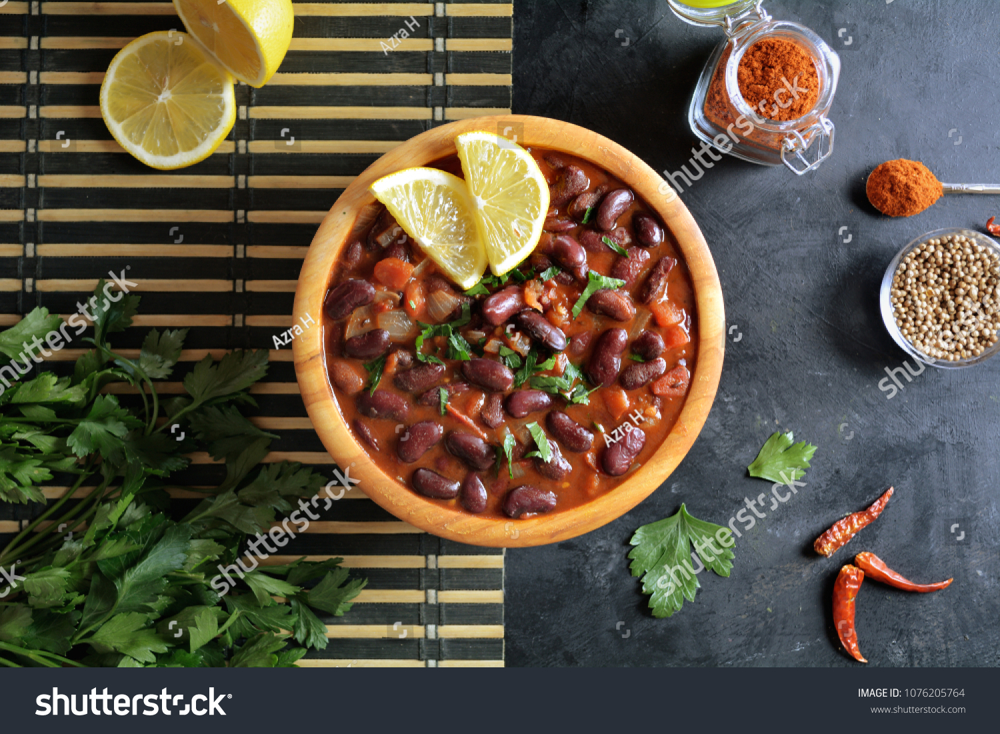

Rajmah

Description
Rajmah curry is a favorite in South Asian regions and is a thick curry made with red beans. It can be eaten with roti(flatbread) or with rice
Ingredients
- Redbeans - 150g
- Onions - 1 cup
- Tomatoes 1/2 cup
- Ginger Garlic paste - 1tsp
- Zeera (cumin) powder 1tsp
- Red chilli powder 1tsp
- Haldi 1tsp
- Coriander powder 1tsp
- Qorma Masala Shan 1tsp
- Oil - as per liking
Steps
- Heat up oil in medium heat for 5-7 minutes till it is hot
- Lightly fry onions in the pan till they become transluscent
- When more than 50% of onions have changed color, put ginger garlic paste into the pan and let it cook for 1 minute
- Add cumin powder, red chilli powder, haldi, coriander powder and qorma masala into the mix and mix well
- Let the mixture cook and try to break onions into smaller pieces. Let it fry for 5 minutes while stirring. Then Add tomatoes into the mix
- After 10 minutes, you should have a homogenous base - add 100-120 grams red beans and some water into the mix. Take 30-50 grams red beans and mash them up into a paste.
- After 10-15 minutes of cooking, you should have rajmah ready. Can garnish it with coriander, raw onions and add a hint of lemon to your liking!